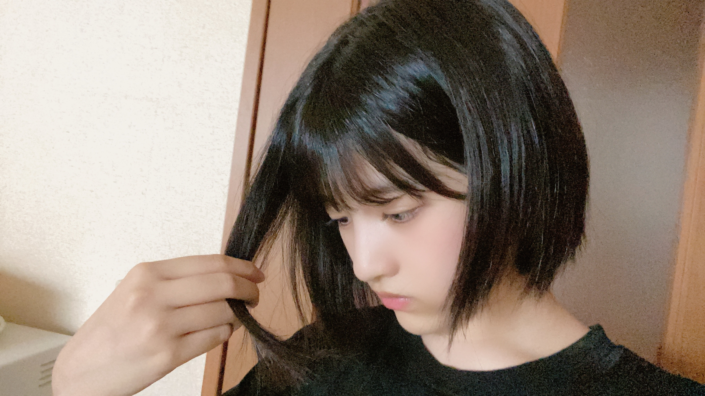

2020/0827Thuお疲れ様です！大喜利ってくれてありがとうございます！！林瑠奈です。
本日もお疲れ様です。
乃木坂46(新)4期生の林瑠奈です。
神奈川県出身高校2年生16歳
華咲かないシックスティーンの林瑠奈です。
負けるなしょげるな林瑠奈、今日も1日頑張るな
(ピンポーン)
25周目となりました、ブログリレー。
全日本アマチュア林大喜利大会

唐突
この間切ってから変わってないはずやのに、「髪切った？」攻撃されまくってます。切ってないのに。
...........................................................................
前回のブログで
①『意味のわからない#を考えてください』
②『「林瑠奈」という漢字に
「はやしるな」以外の読み仮名を振ってください』
③『｢二階から目薬｣のような、アクロバティックな薬の摂取方法を教えてください』
④『林瑠奈がギネス認定、その記録は？』
上の4つのお題でみなさんに大喜利をしていただきました。
急であったにも関わらず、みなさん沢山コメントに書いてくださっていて嬉しかったです。
ここからはわたしが超個人的に『面白いな、いいな』と思ったものを、いくつか紹介させていただきます。
＊＊＊＊＊＊＊＊＊＊＊＊＊＊＊＊＊
① 『意味のわからない#を考えてください』
《林の回答》
A #上さんの昼飯 (はっしゅだぐうえさんのひるめし)
.................................
《みなさんの回答》
A #チーズ蒸しパンのシートにけっこう生地着くの悔しい
ん！！確かにわかりますこれは。ヨーグルトの蓋もですね。
みたらし団子パックの第2レーンに溜まったみたらしもだいぶ悔しいです。
A #日本とバングラデシュの違いは国旗の色だけだと思ってる人と繋がりたい
確かに！！って思ったんですよ、初めは。
でもバングラデシュの国旗は、円が左に寄ってなかったっけ？って思って調べたらやっぱそうでした。
全然色だけじゃないですよ、違いますよ。でも好きです。
＊＊＊＊＊＊＊＊＊＊＊＊＊＊＊＊＊
②『「林瑠奈」という漢字に
「はやしるな」以外の読み仮名を振ってください』
《林の回答》
A いにえすた
....................................
《みなさんの回答》
A らいす・こくむちょうかん
んふふ笑。『らいす』に関して特別ビビっと来たというより、『こくむちょうかん』ですね。
ここで大統領とか、神様とか、総理大臣みたいなわかりやすいやつじゃなくて、敢えての国務長官。
とてもお気に入りです。林瑠奈より。
A いにえすた
はい、いましたね。自分でやった後に思いました。
『絶対イニエスタさん関連おるよな』と。
＊＊＊＊＊＊＊＊＊＊＊＊＊＊
③『｢二階から目薬｣のような、アクロバティックな薬の摂取方法を教えてください』
《林の回答》
A グチャグチャオブラートシェパードパイ
....................................
《みなさんの回答》
A 点滴を加湿器で炊いて摂取
うわっありそうでないやつですねこれ。確かにできそうな気もする。
鼻から吸い込みスタイルで点滴の意味はあるのか？
調べてみようと思います。
A 走りながら湿布を直食い
めっちゃ面白いです。好きです！！
＊＊＊＊＊＊＊＊＊＊＊＊＊＊＊
④ 『林瑠奈がギネス認定、その記録は？』
《林の回答》
A 1分間足つりリレー
....................................
《みなさんの回答》
A 1分間白目をむいた回数102回！(誕生日にかけてみました笑)
絶対言う人おるやろなーって思ったもん！やっぱりおりましたね。
...........................................................................
いや〜ありがとうございました！！
みなさんセンスある方多くて楽しかったです。
お題も沢山書いてくださってたのでまたやります！！！
.................................................................................
今日、8月27日。
松村沙友理さん、お誕生日おめでとうございます！！
わたしにとって松村さんは乃木坂にハマるきっかけとなった方です。
とてもとてもお可愛いのに大食いな一面、バラエティ力の高さ、関西弁での粋なツッコミ。そんな沢山のギャップのある方で、本当にどこをとっても魅力いっぱいの憧れの存在です。
以前ある雑誌さんにインタビューしていただいた際、松村さんのお話になりました。
「この間松村さんと会ってね、『昨日の夜ご飯は何を食べたんですか？』って聞いたら
『昨日は塩鮭がお安かったのでそちらを焼いて、お米を3合炊いて、どんぶりごはんの上に乗せて食べましたよ。』って言ってました。林さんはごはんどのくらい食べますか？」
とインタビューしてくださった方がおっしゃっていて、これが今でも印象に残っています。
まだ少ししかお話しさせていただいたことはないのですが、素敵な一年になりますよう全力祈願しております！！
8月23日。
向井葉月さん、お誕生日おめでとうございます！！
向井さんのポジティブなところ、拝見していていつも元気をいただいています。
以前、あるヘアメイクさんとお話しした際に向井さんの話をしました。
「メガネに赤ちゃん付けてたよ」
というなんともパワーワードな情報をいただいたのですが、
『わたしも知ってます！赤ちゃんソルジャー！！』
と思っていました。
赤ちゃんソルジャーで合っているのかはわからないのですが、ヘアメイクさんのお話から本当に面白い方なのだと思い、いつかお話しできる機会があればなぁと思っています。
素敵な一年となりますよう、ハムスターのカラカラ並みのパワーで念を送っております！！
8月24日。
せーらちゃん、お誕生日おめでとう！！！
いつもせーらちゃんはまゆちゃんと一緒にわたしのよくわからんノリに付き合ってくれます。でも頼みごと聞いてくれたりするところは、やっぱりお姉さんやなぁと思ってます。
今後たぶん、いや絶対わたしのダンスの出来なさで手を焼かせてしまうことあると思うので、先に謝っとくね。すいません。
せーらちゃんの一年が素敵な一年になるように、林頑張ります。
...........................................................................
明日はミュウちゃんです。
課題無事？？
めっちゃ頑張ってたから、もし終わってなくてもみゆちゃんは偉いよ。偉すぎる！！
ほんっとうにすみません！！！！
自撮りをするタイミングの配分をミスってしまい、写真が一枚になってしまいました。
次は自撮りブログにするので許してくだされ〜
アディオス！！！！！！！！
2020/08/27 16:42

PROFILE
新4期生リレー
202104
| SUN | MON | TUE | WED | THU | FRI | SAT |
|---|---|---|---|---|---|---|
| 1 | 2 | 3 | ||||
| 4 | 5 | 6 | 7 | 8 | 9 | 10 |
| 11 | 12 | 13 | 14 | 15 | 16 | 17 |
| 18 | 19 | 20 | 21 | 22 | 23 | 24 |
| 25 | 26 | 27 | 28 | 29 | 30 | |

コメント(176)
またすぐコメントします！
アディオス！
るんちゃん！
やっほー！
ひろき(Yandji)です☺️
ブログ更新ありがとー！！！
質問タイムー！！！
やってみたいスポーツってある？
また、コメントするね！
では、またねー！
ひろき(Yandji)より
質問です！スタッフさんとかメイクさんとかメンバー以外の推しメンっていますか？あと、出来ればそれに関するエピソードも教えてくだせえ、、ら
次のブログの自撮り楽しみにしてますね！
るなちゃんはほんとすごいよね
ブログで大喜利大会やっちゃうなんて
まだ誰もやったことないんじゃない？？
るなちゃんはほんとにおもしろいから企画が成り立つんだろうね
これからも独特なブログ待ってるね！
っていうか、、
まっちゅんは塩鮭そんなに好きじゃなかったんじゃないっけ？
乃木中でそんなこと言ってた気がするからあれ変だな〜？wって思った
これからの弁当は何も気にせず取っちゃっていいんじゃね？？笑
今回はこのへんで！
サシのゆうきでした〜
待ってました～！
大喜利できなくてごめん！（テストで忙しくて．．．）
面白かったよ
【質問です】
・もうすぐMV集が発売されるけど、るなぴが好きなMVは何ですか？
・私は人と話すのが苦手です。どうしたらいいですか？
愛媛県在住 中３女子 音より
追伸：長くてごめんね
るなぴの大喜利の回答見て師匠。ってなりました。ありがとうございます。
質問〇るなぴは水とウォーターどっちが好きですか？ちなみに僕はWaterです。
欅坂の新2期生の子達が踊ってるの見てると早くるなぴ達(新)4期生の子が踊ってる姿見たいなぁって思うこの頃でした！！見れる日を楽しみに待ってる！！
るなぴにとってより良い日々になりますように！
ゴードンでした！アディオス！！
次の大喜利では一本取れるように頑張る！
次のブログでは写真を楽しみにしてます。
ラジオの林も面白かったよ！
○質問です
○ラジオをやってみてどうでしたか？次に活かしたいこと、どのメンバーとやってみたいかも聞きたいです！！
「ライス」くださーいの下りで一発で記憶に残って、るなちゃんを覚えた。その後に掘ちゃんに振ってくれて、何か嬉しかったです。
蜂に刺されたおたま、これはたまちゃんが「あつ森」での
出来事です。
林瑠奈変換、「蜂に刺されたおたま」でした。
たまちゃんごめんね。
またね、るなちゃん！
こんにちは
ご無沙汰してます。。。
東京都在住中二女子Nanaです。
模試が終わりましたあああ。
大喜利面白かったよ！
次回も楽しみにしてます。
じゃあね
アディオス‼ Nana
ブログ更新お疲れ様m(_ _)m
大喜利みんなセンス有るね
面白かった(｀・ω・´)
松村さん葉月ちゃん聖来ちゃん誕生日おめでとう
本当に8月に誕生日を迎えるメンバー多いね(`･ω･´)
因みに俺の誕生日は葉月ちゃんと1日違いです
おやすみおな
良い夢を
また明日
負けるなしょげるな林瑠奈！今日も一日頑張瑠奈
ってめっちゃいいね笑
松村さんおめでとうだね！
瑠奈ちゃんの今の髪の長さすごい好きかも……
ほんとに可愛いし似合ってます！
またブログ待ってるね！
いにえすたはめっちゃ思った笑笑
本当に毎回楽しいブログをありがとう！！！笑笑
これからも体調に気をつけてがんばってね！！
カイトより
「全日本アマチュア林大喜利大会」って（笑）
訂正、「全世界」だよ！
うわーー、マジで綺麗な黒髪だな(｡>﹏<｡)♡♡
上さんは誰？（笑）多分そういうことかな？
そして皆のハッシュタグ長いなあ（笑）
待って、今日のブログの内容は本当にほぼ「大喜利」だけじゃん！（笑）がちじゃん！（笑）
るなぴーの番組期待する＼(^o^)／（笑）
まちゅとのインタビュー、衝撃の3合って（笑）
お二人の関西弁で会話することを見たいなあ(*´ω｀*)
葉月ちゃんは本当に面白い子だよ。正直、めちゃるなぴの独特な波長と合う気がする＼(^o^)／
仲良くなってほしいよ(｡>﹏<｡)
せーらはやっぱりいつもまゆたんのとこに居るよね（笑）
林頑張れ！そして、やっぱり関西弁の会話を聴きたいよ(｡>﹏<｡)
凄く美しい黒髪姿が映っている1枚があるから、許す(*´ω｀*)♡（笑）
次回の自撮りブログ楽しみ＼(^o^)／
これからも頑張って(/･ω･)/
全日本アマチュア林大喜利大会の回答を見て1人で笑いながら見ましたw個人的にはいにえすたが1番笑いましたw
自撮りブログとても楽しみです！
次回のブログも楽しみに待ってます∫∫∫
ではでは、アディオス〜
大喜利！！！
“#上さんの昼飯”ってやつ
いのうえさんのひるめし
って読むんかと思った！！(())
うえさんなんや！！
次のブログ自撮りブログですか！！
地鶏〜自撮り〜地鶏〜
明日は金曜日なので明日頑張ってゆっくり休みます！！！
今日もお疲れ様です！！！！
ってことで明日も元気で！アディオス！！！！
バラエティにラジオにどんどん活躍の場が広がってファンとしても嬉しい
早く直接気持ちを伝えられる日が来るといいな。。
元気になれます！最近、瑠奈ちゃんの雰囲気が桜井日奈子さんにそっくらって思ってます！これからも活躍期待してます！！！
もう25周目なのですね、大喜利面白いです。
次のブログも楽しみにしてます。
そろそろ華咲くシックスティーンください。貴方華咲いてますから。自撮りも量が無くても質が良いので満足です
大喜利は初回から難易度の高いお題で大学の課題並みに大変でした。次の開催時は入賞できるよう精進してまいります。
今日はこの辺で。アディオス
のりしお。
小学６年生のるなぴ推しです☆
＿＿＿♪＿＿＿
るなぴの自撮り会楽しみにしてるよ～！今回の自撮りが可愛すぎるから、LINEのアイコンにしますね～！
みゆちゃん課題終わってるといいね！
＿＿＿♪＿＿＿
また後でコメントしま～～す！
とりあえず時間ないんでアディオス！！！！！
(ゝω・)
お疲れ様又宜しくお願いします
瑠奈ちゃん
大喜利！！！
“#上さんの昼飯”ってやつ
いのうえさんのひるめし
って読むんかと思った！！(())
うえさんなんや！！
次のブログ自撮りブログですか！！
地鶏〜自撮り〜地鶏〜
明日は金曜日なので明日頑張ってゆっくり休みます！！！
今日もお疲れ様です！！！！
ってことで明日も元気で！アディオス！！！！
前のブログ読めてないかも！ごめんなさい！
林瑠奈の回答も結構面白かったけど、やっぱり皆さん(ファンの人)は強かった...
今度からも大喜ってください！
アディオス!!
ブログ更新待ってたよ。
今回の大喜利ブログ、ハードル高いわ。
でも、面白かったよ。
乃木のの、聴いたよ。
ラジオもいい感じだね。
今後も活躍、楽しみにしてます。
大喜利めっちゃ難しかったす。他の人面白すぎませんか？笑笑
第2回はもっと頑張るんで機会があれば是非。。。
質問！「理々杏ちゃんの好きなとこ教えてください！」
実は私、理々杏ちゃんのことも好きなんです。
ツインテールが特に。
そんじゃ今回はこの辺でアディオス！！アディオス！！！
(大事なので2回言いました。余弦定理を今日理解しました。
一応高3です。助けて。。)
大喜利忘れてた…
負けるなしょげるな林瑠奈って唱えながら
テスト勉強して、ミニテスト無事に終わりました
るなぴのおかげ ありがとう！
次も待ってるね〜アディオス！！！！！
オソルベシ
ゲンキデネ
よく見ました！
質問：もやし料理でオススメ料理ある？？
大喜利楽しかったよ。グチャグチャオブラートシェパードパイは意味わからんけどめっちゃ笑った
自分のお題で大喜利してもらうってこういう気分なんですね
"グチャグチャオブラートシェパードパイ"
予想の斜め上 いや 傾斜90゜ガンガン超えてくるスタイル大好きです
ブログでこういった大喜利大会を開催してくれるるなぴ 最高ですよ
これからも新時代 新世界を切り開いてく姿、2年後も見させていただきます
先輩方の誕生日の時のエピソード大好きです
いつもありがとう アディオス！！！！！！！！
男爵芋
バングラデシュの国旗についての細かさ非常に勉強になりました！また開催してくれるのを楽しみにしてます！
ブログ更新ありがとう！
みたらし団子のみたらしを上手に食べる方法教えてください！！
林
可愛い
大喜利、めっちゃ面白かったよ〜！！
みんなとるんるんの回答見て、ああ私の回答はだめだめだ…と思ったw(#るんるんって呼んでみた❤︎)
私も、よく髪切った？って言うけど切ってなかったこと、結構ある！w
でも、髪切ったことに気づいて貰えないより気にして貰えた方が嬉しいし、それほどみんなるなぴのことが好きなんだと思うよ〜！！
林様のブログは、いつも面白くて好き！！
次のブログも楽しみにしてるね〜
自撮りブログ…期待していますっ！
アディオス！！！！！！！！( -`ω-)b
髪切った？は気付いてあげなくちゃいけ
ないプレッシャーで、そう見えてしまう
のかも。
褒めるところは他にも沢山あるのにね。
手紙をもらったら返事を書く。
ブログがアップされたらコメントを書く。
大喜利のお題が出されたらボケる。
これ全て礼儀です。
るなちゃんも、約束守って選んでくれて
ありがとう。大変だったでしょ？
今度はやしが大喜利するのも見たいな。
今年の夏は大変でしたが、何か思い出があれば教えてください。
あでぃおす！！！！∮！！
残念ながら自分の回答採用されなかっぁぁぁ(笑)
皆さんレベル高すぎます…(笑)
もっと精進しますね←
個人的には林瑠奈の読み方でイニエスタがツボでした(笑)
あれオーディションから見てる人しか伝わらないよね(笑)
久々にこのネタ見て懐かしくなった(笑)
大喜利大会第2弾もお待ちしております(笑)
ブログありがとう♪
明日も瑠奈ちゃんにHAPPYを
お休みなさい(^-^ゞ
コメントする